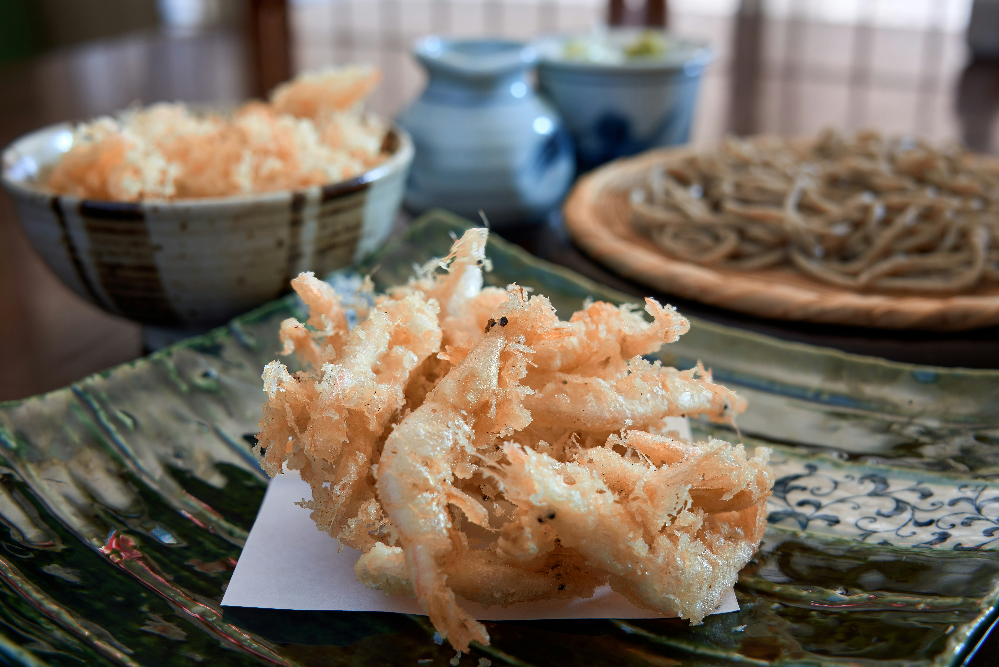

Coconut Shrimp

Crunchy and flavorful coconut shrimp, perfect as an appetizer.
Ingredients
- 1/3 cup all-purpose flour or whole wheat flour (spooned & leveled)
- 1/2 tsp salt
- 1/2 tsp black pepper
- 2 large eggs, beaten
- 3/4 cup Panko bread crumbs
- 1 cup sweetened shredded coconut
- 1 lb raw large shrimp, peeled and deveined, tails attached
- 3–4 tbsp vegetable oil or coconut oil
- Optional: 1 tbsp chopped cilantro for garnish
Directions
- Thaw shrimp if frozen and pat dry.
- Set up breading station: flour, beaten eggs, and Panko + coconut mixture in separate bowls.
- Coat each shrimp in flour, then egg, then Panko + coconut.
- Heat oil in a skillet over medium heat, enough to coat the bottom.
- Fry shrimp 2–3 minutes per side until golden brown and cooked through. Drain on paper towels.
- Optional: Sprinkle with chopped cilantro before serving. Serve with dipping sauce if desired.
- Freezing tip: Fried coconut shrimp can be frozen up to 2 months. Reheat at 350°F for 10 minutes.